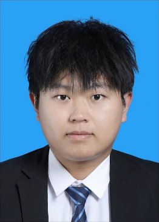

类脑计算机制
围绕 SNN 训练稳定性、替代梯度、膜电位分布和时间编码建立方法基础。

About
类脑计算、智能信号处理与半导体器件智能建模研究者 · 西安电子科技大学人工智能学院
我的研究以类脑计算为核心，关注脉冲神经网络如何在噪声、低功耗和复杂时序约束下稳定工作。雷达信号处理与遥感图像理解是类脑方法的重要应用场景；半导体器件建模则是面向物理系统优化的交叉延展。
围绕 SNN 训练稳定性、替代梯度、膜电位分布和时间编码建立方法基础。
将类脑模型用于雷达脉冲序列、遥感图像等真实信号任务，而不是把应用场景误写成主线本身。
结合 TCAD 数据、物理先验和机器学习代理模型，面向功率器件结构优化。
我将自己的研究定位在“类脑计算方法 → 智能信号处理应用 → 半导体器件智能建模”的连续谱上。核心问题不是单纯追求模型精度，而是理解模型如何在噪声、稀疏时序、低时延和物理约束下可靠工作。
雷达和遥感在这里更准确地说是类脑计算的应用场景：它们提供复杂信号、真实噪声和低功耗需求，用来检验 SNN 与事件驱动表示的有效性。
当前主页收录 11 篇论文，覆盖 ICML、AAAI、ICASSP、Applied Physics Letters、Electronics、IEEE Signal Processing Letters、Neurocomputing、IEEE Transactions on Electron Devices 与 Micromachines 等会议和期刊。
这些成果分别落在三条主线中：SNN 训练与时间编码机制，类脑模型在雷达、遥感及多模态品质感知中的应用，以及半导体器件建模、结构设计与物理验证。
Spiking Neural Networks, Neuromorphic Computing, Temporal Encoding, Radar Signal Processing, Remote Sensing SNNs, Signal Deinterleaving, Surrogate Function Optimization, TCAD, LDMOS.
Email: qisun@stu.xidian.edu.cn